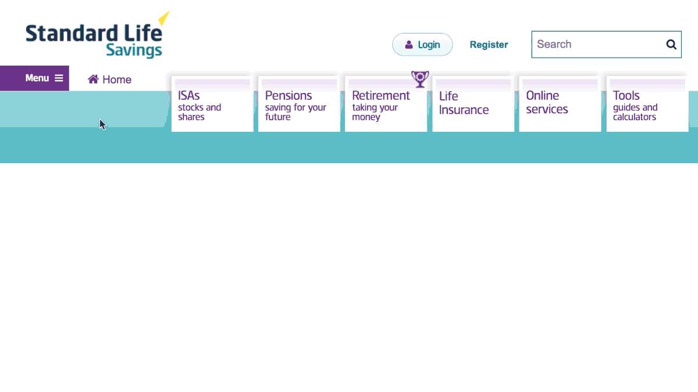
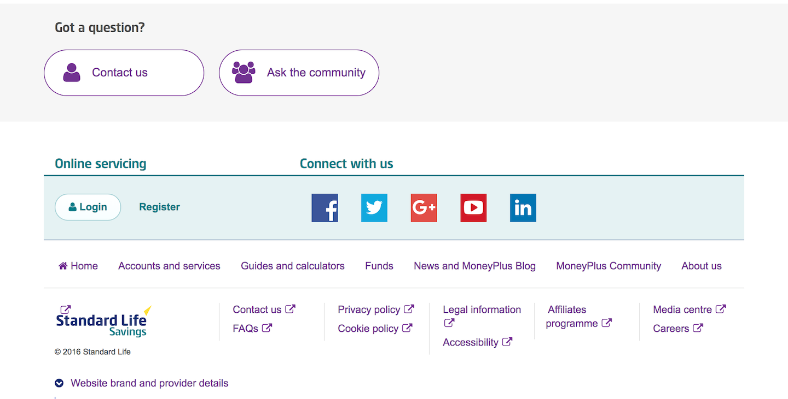
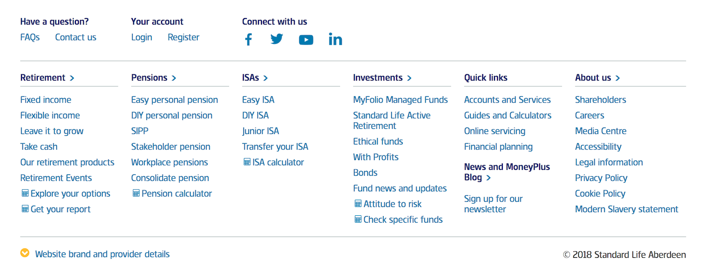

IA and mega menu redesign
I designed and advocated for the introduction of a global navigation and redesigned footer for Standard Life’s customer website.
Problem
There was no consistent navigation or a clear information architecture across the site.
Solution
I organised the information architecture of the site to better align with customer needs and used this to design new global navigation and footer components.
My role
- Information architecture
- Layout
- HTML
- CSS
Before
The homepage had a navigation menu with tiles with links to the main sections of the site, but these were not repeated on lower-level pages. Additionally, the navigation component that was across the entire site was hidden behind a “hamburger” menu on all screen sizes.
After
I borrowed styles from the navigation customers were familiar with when they logged in to their account. I created mega menu drop downs with clear typography and iconography to help provide structure to the options available in each of the main sections of the site.

Before
Relatedly, the footer did not match up with the information architecture of the site and blended in too much with the content on pages.
After
The footer, while a lot larger than the previous one, houses links to nearly all pages of the site and provided a better contrast to the content of the site allowing for easier scanning.
